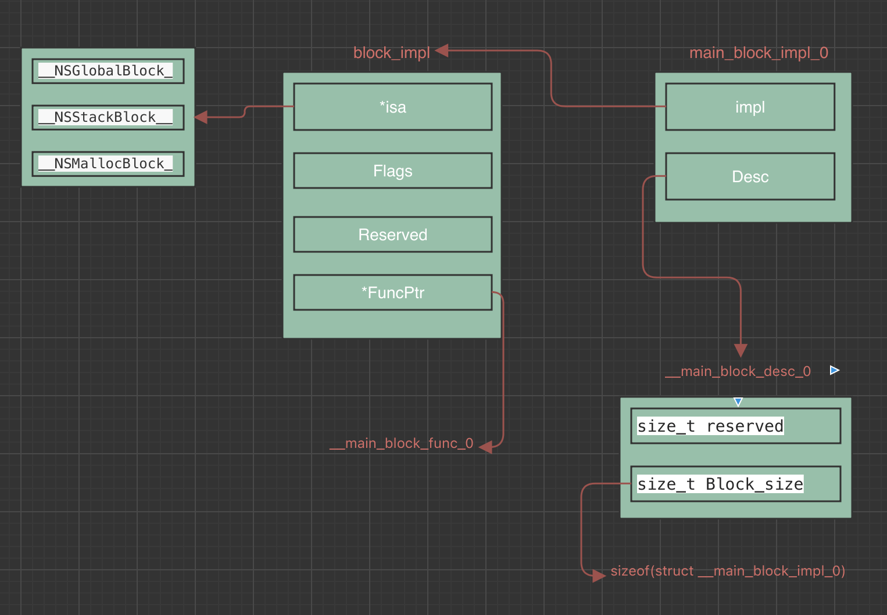

背景
面试基本必问的一个问题： block的本质
下面我们就来探讨一下，block的本质到底是什么
OC里我们申明一个block其实很简单： void (^block)() = ^{}; 但是想要知道block到底是怎么去实现的，怎么去捕获变量，如何调用的，这些，就需要去👀一下C++代码了
xcrun -sdk iphoneos clang -arch arm64 -rewrite-objc main.m随便找一个.m文件，写一个block，然后命令行执行上面的命令，即可得到一个.cpp文件，下面放上鄙人的代码
main.m
1
2
3
4
5
6
7
8
9
10
11
12
13
14
15
16int main(int argc, char * argv[]) {
@autoreleasepool {
int age = 29;
void (^abBlock)(int, int) = ^(int a, int b){
NSLog(@"this is block a = %d, b = %d", a, b);
};
void (^ageBlock)(void) = ^(){
NSLog(@"this is block age = %d", age);
};
abBlock(2,8);
ageBlock();
}
return 0;
}main.cpp
1
2
3
4
5
6
7
8
9
10
11
12
13
14
15
16
17
18
19
20
21
22
23
24
25
26
27
28
29
30
31
32
33
34
35
36
37
38
39
40
41
42
43
44
45
46
47
48
49
50
51
52
53
54
55struct __main_block_impl_0 {
struct __block_impl impl;
struct __main_block_desc_0* Desc;
__main_block_impl_0(void *fp, struct __main_block_desc_0 *desc, int flags=0) {
impl.isa = &_NSConcreteStackBlock;
impl.Flags = flags;
impl.FuncPtr = fp;
Desc = desc;
}
};
static void __main_block_func_0(struct __main_block_impl_0 *__cself, int a, int b) {
NSLog((NSString *)&__NSConstantStringImpl__var_folders_b1_2f1kmyyj5bs04kxzzjk3qd880000gn_T_main_40bd81_mi_1, a, b);
}
static struct __main_block_desc_0 {
size_t reserved;
size_t Block_size;
} __main_block_desc_0_DATA = { 0, sizeof(struct __main_block_impl_0)};
struct __main_block_impl_1 {
struct __block_impl impl;
struct __main_block_desc_1* Desc;
int age;
__main_block_impl_1(void *fp, struct __main_block_desc_1 *desc, int _age, int flags=0) : age(_age) {
impl.isa = &_NSConcreteStackBlock;
impl.Flags = flags;
impl.FuncPtr = fp;
Desc = desc;
}
};
static void __main_block_func_1(struct __main_block_impl_1 *__cself) {
int age = __cself->age; // bound by copy
NSLog((NSString *)&__NSConstantStringImpl__var_folders_b1_2f1kmyyj5bs04kxzzjk3qd880000gn_T_main_40bd81_mi_2, age);
}
static struct __main_block_desc_1 {
size_t reserved;
size_t Block_size;
} __main_block_desc_1_DATA = { 0, sizeof(struct __main_block_impl_1)};
int main(int argc, char * argv[]) {
/* @autoreleasepool */ { __AtAutoreleasePool __autoreleasepool;
int age = 29;
void (*abBlock)(int, int) = ((void (*)(int, int))&__main_block_impl_0((void *)__main_block_func_0, &__main_block_desc_0_DATA));
void (*ageBlock)(void) = ((void (*)())&__main_block_impl_1((void *)__main_block_func_1, &__main_block_desc_1_DATA, age));
((void (*)(__block_impl *, int, int))((__block_impl *)abBlock)->FuncPtr)((__block_impl *)abBlock, 2, 8);
((void (*)(__block_impl *))((__block_impl *)ageBlock)->FuncPtr)((__block_impl *)ageBlock);
}
return 0;
}
通过上面的代码我们可以看到几个struct：
__main_block_impl_0__main_block_func_0__main_block_desc_0__block_impl
而我们需要关注的就是他们，下面我先放上关系图帮助理解，然后我们再一步一步分析代码

下面我们从调用关系开始往前推，先看看我们申明了一个block，到C里他是如何编译的
1 | void (*abBlock)(int, int) = ((void (*)(int, int))&__main_block_impl_0((void *)__main_block_func_0, &__main_block_desc_0_DATA)); |
从上面的代码可以看到其实是把
__main_block_impl_0的地址给了abBlock, 而__main_block_impl_0又有两个入参__main_block_func_0和__main_block_desc_0_DATA。
__block_impl
1
2
3
4
5
6struct __block_impl {
void *isa; //isa指向三种类型 global, malloc, stack
int Flags;
int Reserved;
void *FuncPtr;
};__main_block_impl_0
1 | struct __main_block_impl_0 { |
我们可以看到他的构造函数是如何实现的
一个fp指针，一个desc指针，一个带默认值带flags。
从上面可以看到，fp就是
__main_block_func_0，而fp最终是赋值给了block_impl的FuncPtr,那么__main_block_func_0又是什么呢？ 我们来看他的定义
1 | static void __main_block_func_0(struct __main_block_impl_0 *__cself, int a, int b) { |
他就是我们的block里要执行的代码
NSLog(@"this is block a = %d, b = %d", a, b);
desc是 __main_block_desc_0_DATA
2
3
4
size_t reserved;
size_t Block_size;
} __main_block_desc_0_DATA = { 0, sizeof(struct __main_block_impl_0)};
这里面存储了__main_block_impl_0的大小信息
以上这些构成了 __main_block_impl_0 这个struct的内容，那么我们是不是可以理解 他就是block的本质了，最后，我们看系统是如何调用这个block的
1 | ((void (*)(__block_impl *, int, int))((__block_impl *)abBlock)->FuncPtr)((__block_impl *)abBlock, 2, 8); |
(void (*)(__block_impl *, int, int))调用类型
传递参数 __block_impl里的FuncPtr通过地址找到对应执行代码块，传递参数。
通过以上分析，希望对大家理解block有个帮助，那么我们来总结一下，block到底是什么，实际上他就是一个OC对象，因为他拥有isa指针。
下一章，让我们探讨 *
block的内存管理*